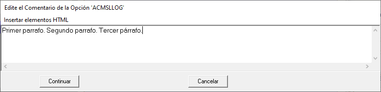
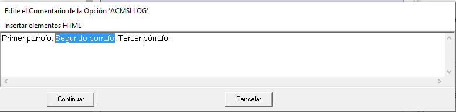
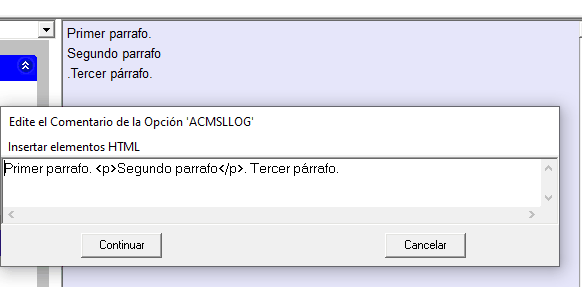

En un texto HTML los cambios de 'párrafo' requieren un elemento "<p> ... </p>", ya que los retornos de carro, que es el procedimiento común para esta operación en procesadores de texto, no se presentan. Ejemplo:
Párrafo primero.<p>Párrafo segundo.</p> |
Párrafo primero. Párrafo segundo. |
Menu "Agregar un párrafo" |
Si embargo, el formulario "Edite el Comentario ..." permite inserta automáticamente un elemento "<p>" cuando se encuentra dos "retornos de carro" consecutivos.
Supongamos que partimos del siguiente texto, introducido directamente tecleando sobre el bloque de texto:

Si queremos que el texto "Segundo parrafo" se presente efectivamente en un párrafo siguiente al que se presenta "Primer parrafo", primero seleccionamos este texto (ver figura siguiente).

A continuación seleccionamos "Agregar un párrafo" e, inmediatamente, el texto quedará modificado como muestra como indica la figura siguiente, y se verá reflejado en el bloque "Comentario" en la Vista estandar.
